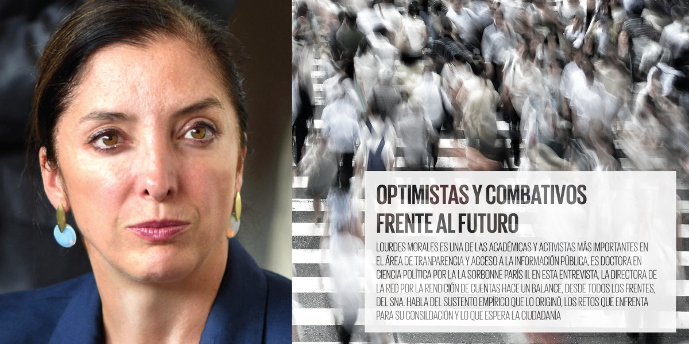

Entrevista con Lourdes Morales Canales
24 junio 2019
OPTIMISTAS Y COMBATIVOS FRENTE AL FUTURO
Entrevista con Lourdes Morales Canales

¿Cuál es el balance que puede hacerse hoy respecto del proceso de construcción del Sistema Nacional Anticorrupción? ¿El balance es positivo o negativo?
Es positivo en cuanto a que las premisas que dieron origen al Sistema Nacional Anticorrupción y sus equivalentes en las entidades federativas parten de un diagnóstico compartido, informado, basado en evidencia que sigue vigente.
El Sistema no es la varita mágica que por su simple existencia normativa resolverá todos los problemas del país. El sistema se creó derivado de la existencia de un entramado de rendición de cuentas disfuncional, fragmentado, asimétrico, que generaba duplicidad de funciones (como las acciones derivadas de las entidades de fiscalización y los Órganos Internos de Control), e incongruencias en la gestión administrativa y propiciaba abusos, simulación y despilfarro de recursos. El sustento empírico del sistema obedece a tres cuestiones: Por un lado, la necesidad de terminar con el complejo problema de la corrupción, desde sus causas –es decir desde los mecanismos, actores, relaciones que hacen posible la depredación de los bienes públicos para beneficio de unos cuantos– y no solo a partir de las consecuencias que se generan los actos consumados.
Es decir, evitar el enfoque exclusivamente punitivo de la corrupción en donde se busca la cacería de "peces gordos", los casos visibles que se convierten en políticamente rentables y mediáticamente atractivos. El uso político de la corrupción es socialmente llamativo pero solo en el corto plazo.
Al no detonar mecanismos efectivos de prevención, vigilancia, corrección y sanción, nuevos casos se generan y paralelamente aparecen "vacunas sociales" y desafección política: la sociedad se acostumbra a los escándalos y termina por hacer generalizaciones del estilo de "todos los funcionarios son corruptos".
Una segunda cuestión es generar inteligencia institucional, es decir, utilizar un esquema de información compartida entre las instituciones clave de rendición de cuentas en México para compartir estrategias, generar medidas de prevención y corrección de prácticas, normas, procedimientos que propician el abuso de la discrecionalidad y contar con formas de medir el impacto.
Finalmente, fortalecer los pesos y contrapesos institucionales. Esto es, transitar de un modelo de concentración a uno de dispersión para evitar la captura política o el cerco hacia una sola institución. Al fortalecer la distribución de competencias entre los poderes públicos y entre los distintos niveles de gobierno proviene la vigilancia mutua. En países con tradición presidencialista, como México, esto es particularmente importante, se trata de "dividir lo indivisible" para evitar que un solo poder público concentre facultades y cometa excesos.
Existen otras tres cuestiones importantes que sustentan la existencia del SNA. En primer término el hecho de que la corrupción sistémica como la que existe en México, es decir, el tipo de corrupción que se convierte en una forma de funcionamiento en detrimento de la fortaleza del Estado, debe de observarse como un problema de comportamiento en redes y no como un problema de individuos aislados.
Esto implica conocer incentivos, normas, accesos, relaciones y estructuras financieras para poder seguir la ruta del dinero y desmantelar la red " de corrupción.
En segundo término, que no existen incentivos para denunciar la corrupción. Al no existir un marco normativo que proteja realmente la denuncia, ni tampoco mecanismos de investigación profesionalizados y robustos, son pocos si no es que nulos, los incentivos para denunciar.
En tercer lugar, las formas de participación social se topan con la impunidad. Una infinidad de observatorios, organizaciones, grupos ciudadanos, medios de comunicación han mapeado y detectado casos de corrupción. La publicidad de estos casos suele terminar en una nota de ocho columnas que al día siguiente se convierte en historia.
Es negativo en cuanto a que a pesar de las propuestas y diagnósticos, a pesar de la evidencia y de la urgencia por combatir el grave problema de la corrupción, aún no contamos con una política pública al respecto.
¿Advierte algún riesgo para que el Sistema no se consolide? Y si este esfuerzo naufragara, ¿cuáles serían los costos que tendría para el país?
Hay varios riesgos:
1) Un mal diagnóstico del problema público generaría una mala política pública y, por lo tanto, las acciones serían insuficientes acaso nocivas y no habría mejoras.
2) La efervescencia normativa que se está generando en el Congreso Federal y en algunos congresos locales han funcionado como obstáculos para el funcionamiento del Sistema Nacional y para los sistemas estatales anticorrupción. Se quiere enmendar la plana cuando todavía no están funcionando plenamente.
3) Las designaciones de los titulares de las instituciones que conforman el Sistema Nacional y los sistemas estatales anticorrupción. Las instituciones que integran el SNA y los sistemas estatales deben de ser modelo de rendición de cuentas. Las cuotas políticas, la impericia, o los intereses de grupo son una amenaza real para el fortalecimiento y el adecuado funcionamiento de estas instancias.
4) La confusión conceptual. Hasta ahora, tanto las iniciativas presentadas en el Congreso como la propuesta presentada al Comité Coordinador por parte del CPC nacional tiene fuertes carencias. En primer lugar se tiene que recordar que toda política pública requiere de un diagnóstico del problema que se pretende atacar. Para ello se requiere de una definición de la corrupción como problema público. En la propuesta del CPC existen omisiones y confusiones que han sido reiteradamente señaladas por la Comunidad PIRC del CIDE. Las principales son:
A) La propuesta contiene un enfoque punitivo del combate a la corrupción a partir del cual se sostiene que la impunidad y la arbitrariedad son las causas principales. En este sentido, arbitrariedad se confunde con abuso de la discrecionalidad. No son la misma cosa.
B) La propuesta del CPC omite la existencia del SNA. No incorpora responsabilidades concretas para cada una de las instituciones que integran el SNA y olvida la importancia del sistema mismo.
C) La propuesta tiene un enfoque centralista y se olvida del federalismo como si todas las entidades y todas las instituciones del país contaran con un piso similar de capacidades, presupuestos y contextos. En un país tan complejo como México, esta omisión puede generar que el remedio termine siendo mucho peor que la enfermedad.
D) La propuesta no incluye a la rendición de cuentas como un elemento fundamental del combate a la corrupción y como olvida la existencia del SNA, tampoco promueve que las propias instituciones que integran el Sistema Nacional y los sistemas estatales sean modelo de rendición de cuentas.
E) La propuesta omite la noción de inteligencia institucional y por lo mismo el enfoque de control interno es del "policía" que debe de sancionar.
F) La propuesta plantea más de 60 prioridades. Cuando todo es prioritario, nada termina siéndolo.
¿Cuáles son los principales retos que enfrenta en México el modelo de combate a la corrupción, cualquiera que sea su nombre y estructura? ¿Existen bases desde las cuales pueda consolidarse un modelo exitoso en esta materia?
1) Definición y aprobación de una política nacional anticorrupción que trascienda los cambios de gobierno y los cambios institucionales y que esté basada en la evidencia que ya existe.
2) Legitimación social del SNA y los sistemas estatales.
3) Comprensión del papel de los comités de participación ciudadana y articulación con otros grupos ciudadanos.
4) Profesionalización y meritocracia en las distintas instancias de la administración pública.
5) Priorización iniciando con la corrupción de ventanilla cuyo diagnóstico ya existe por entidad federativa en instrumentos como la Encuesta Nacional de Calidad e Impacto Gubernamental de INEGI.
6) Desarrollo de una estrategia de información que acompañe las acciones de combate a la corrupción.
¿Quién posee la fórmula eficaz para combatir la corrupción? ¿El sector público?, ¿el privado?, ¿la academia? ¿la sociedad civil? ¿los medios de comunicación?
No es una receta universal. Debe ser un esfuerzo colectivo que inicia, sin duda, con la aprobación de una política nacional anticorrupción capaz de asignar tareas y responsabilidades a cada una de las instituciones que conforman el SNA y los sistemas estatales, pero también que funcione de eje transversal para toda la administración pública del país. Sector público y privado juegan un papel pero necesitan que alguien les pase el libreto.
¿Qué experiencias del mundo deberíamos estudiar, analizar y, de alguna forma, "importar" para consolidar el modelo de combate a la corrupción? ¿O estamos construyendo un "modelo mexicano"?
Se debe de construir un modelo mexicano adaptado al contexto político, social e institucional de México. Pero esto no excluye que se incorporen prácticas que sabemos que ya funcionan. Hay que voltear a ver a América Latina principalmente a aquellos casos que se dicen "de éxito" (Guatemala, Perú, Brasil) por haber metido a expresidentes a la cárcel, pero que cuentan con Estados frágiles, capturados por intereses, incapaces de procesar respuestas a las prioridades de seguridad, igualdad y derechos de la ciudadanía. Hay que ver casos de meritocracia y sus efectos en la función pública (países europeos) pero sin olvidar que estamos en un país de enormes desigualdades, donde el mérito y la cuna van de la mano. La meritocracia y la profesionalización deben contar con políticas de inclusión e igualdad.
Los ciudadanos tiene poca paciencia y no les gusta esperar y por ello muchas voces ya reclaman que ha pasado demasiado tiempo y no se han visto resultados. ¿Es razonable la exigencia a estas alturas, o tendríamos que esperar más tiempo para ver resultados? Es cierto. Si no hay resultados es porque existe una intención deliberada por parte de la clase política y de intereses privados que han sistemáticamente boicoteado el funcionamiento del SNA y de los sistemas locales anticorrupción. Mientras no haya una política aprobada no tendremos acciones y, por lo tanto, no habrá resultados.
Cuando los resultados del modelo de combate a la corrupción se registren, ¿cómo los van a distinguir los ciudadanos? ¿Cómo nos vamos a dar cuenta de que las cosas han cambiado y la corrupción ha sido controlada? Es muy sencillo, no necesitas un gran diagnóstico para saber que está lloviendo. Cuando las administraciones funcionan bien dan resultados. Sabremos que se están haciendo cambios cuando se acabe con el sistema de cuotas políticas. Cuando realizar un trámite no requiera de pago de sobornos, cuando la fiscalización de los partidos políticos sea eficiente y logre detectar triangulaciones de recursos antes de la elección y no después, ya que los que recién llegan a los cargos tienen capacidad de evadir su responsabilidad. Cuando la información pública sea constantemente y rutinariamente pública y no se tengan que hacer solicitudes o se usen plataformas que desaparecen información o llevan a formatos vacíos de contenido.
Cuando los informes de la fiscalización tengan un efecto sobre el diseño y ejecución de los presupuestos. Cuando las obras públicas cuenten con estudios previos de impacto y cuesten lo que dicen que deben costar y den como resultados servicios públicos eficientes. Cuando exista una prensa libre, plural, profesionalizada.
Cuando los funcionarios públicos tengan completa certeza sobre sus mandatos, funciones y responsabilidades y que exista además un orgullo de ser funcionario; cuando las denuncias deriven en una recomendación, una corrección o una acción concreta. Cuando los OIC se conviertan en un sistema de alarmas eficaz, profesionalizado, capaz de detectar y prevenir acciones contrarias a derecho.
Cuando existan fiscales independientes, profesionales, con posibilidad de hacer investigaciones robustas en las que se respete el debido proceso. Cuando un poco de esto ocurra, el impacto será tan importante que sabremos, al fin, que algo está cambiando.
¿En qué ámbito es más probable que veamos resultados pronto? ¿En el federal, el estatal o el municipal? ¿Por qué?
En el estatal puesto que algunas entidades ya cuentan con un proyecto de política estatal anticorrupción distinto al propuesto por el CPC nacional que incluye las particularidades estatales, incluye un diagnóstico y cuenta además con el consenso del comité coordinador. En el municipal pareciera más difícil por las diferencias de capacidades pero también es posible. En el federal siguen sin llegar a acuerdos y aún se plantean nuevas modificaciones, es decir, seguir "parchando" el Sistema sin contar con nombramientos importantes (como los magistrados de las salas especializadas del Tribunal Federal de Justicia Administrativa) y sin dejarlo funcionar plenamente.
¿Debemos ser optimistas o pesimistas respecto del futuro próximo en materia de combate a la corrupción?
Optimistas y combativos siempre. Porque es el problema público con mayor visibilidad. Por este problema cambió la distribución del poder en el país. La ciudadanía no olvida este hecho y no habrá ni transferencia, ni campaña mediática que logre cambiar la urgencia de empezar a combatir la corrupción pronto y en serio.
Descargue la revista Azimut donde encontrará este artículo y muchos más